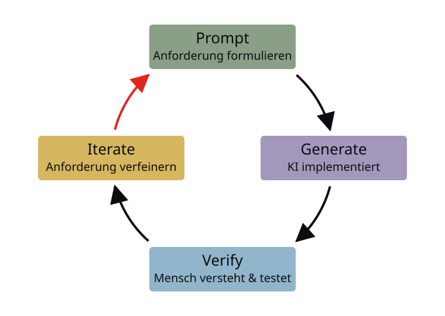
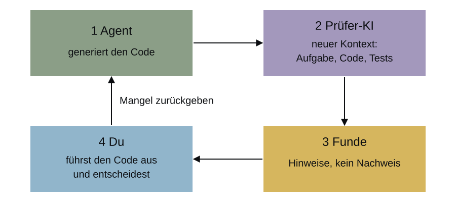

def klassifiziere_boden_agent(wert):
try:
wert = float(wert)
except (TypeError, ValueError):
return "Sauber"
if wert < 50: return "Sauber"
elif wert < 150: return "Beobachten"
else: return "Kritisch"Code Review
Joern Ploennigs · AI4SC
cf. ‘The Jury Room’ by Norman Rockwell, 1959
Hörsaalfrage
Welche Schritte hat der agentische Entwicklungs-Loop?
Wiederholung: Agentischer Entwicklungs-Loop
KI übernimmt die Implementierungsphase — der Ingenieur steuert und verifiziert:
- Prompt = Anforderungsspezifikation
- Generate = Implementierungssprint (KI)
- Verify = Verstehen & Testen (Mensch)
- Iterate = Prompt verfeinern
Kernkompetenz: Verstehen und Verifizieren

Code Review ist der Schritt „Verify“ im agentischen Entwicklungs-Loop
Das Code Review ist der Schritt „Verify“ des Loops.
Du bist der Verifizierer, neben dem Auftraggeber (Prompt) und dem Leser (Verstehen). Dieses Kapitel zeigt, wie du diesen Schritt ausführst.
Schlägt das Review fehl, benenne den konkreten Mangel im Prompt (Iterate) und prüfe das Ergebnis erneut.
Merksatz
Tests prüfen automatisch. Das Code Review prüft zusätzlich die Aufgabe, die Tests selbst und die Fachlogik.
Hörsaalfrage
Der Agent meldet: Eingaben behandelt, alle Tests grün. Was prüfst du noch?
Prüfen in vier Schritten
Agenten verletzen Vorgaben, ändern zu viel und melden Erfolg, der nicht stimmt
38,3 %
Vorgabe verletzt
Der Agent hält sich nicht an eine Vorgabe der Entwickelnden
27,0 %
Missverstandene Absicht
Der Agent deutet die Absicht der Anfrage anders als gemeint
22,6 %
Falsche Erfolgsmeldung
Der Agent meldet Erfolg, der nicht stimmt
10,2 %
Eigenmächtige Änderungen
Der Agent ändert mehr, als verlangt war
Anteile an den validierten Episoden, in denen Entwickelnde und Agent nicht zusammenpassten; eine Episode kann mehreren Formen angehören. Du kannst dich nicht auf „fertig“ verlassen: Prüfe selbst, ob das Ergebnis stimmt.
Tang et al.: How Coding Agents Fail Their Users, arXiv:2605.29442, 2026. Anteile an allen 16.118 validierten Episoden (Mehrfachzuordnung möglich), gerundet
Anthropic: Best practices for Claude Code, 2026
Wiederholung: Die Kapazitätsfalle beim Prüfen
Das Prüfen von KI-Output ist ermüdend („AI Fatigue“) und nicht trivial, Beispiel Softwareentwicklung:
- KI-Output skaliert schneller als menschliche Review-Kapazität (4× mehr Pull Requests auf GitHub [CodeRabbit, 2026])
- Die gefühlte Produktivität steigt [METR, 2025]
- Die gemessene Produktivität sinkt [METR, 2025]
„Entwickler erwarteten, mit KI 24 % schneller zu sein, und selbst nachdem sie die Verlangsamung erlebt hatten, glaubten sie noch, KI habe sie um 20 % beschleunigt.“
— METR [2025]
METR: Measuring the Impact of Early-2025 AI on Experienced Open-Source Developer Productivity, 2025.
CodeRabbit: GitHub Gives Maintainers a Throttle for the AI Pull Request, 2026.
Wiederholung: KI schreibt den Code, du verantwortest ihn
Die KI ist die Junior-Entwicklerin, du bist der Senior, der den Code abnimmt.
Auftraggeber
- Anforderung präzise formulieren
- Im Biegespannungs-Beispiel: Einheiten fehlten im Prompt
Leser
- Code und Annahmen verstehen
- Im Beispiel: kNm durch mm³ im Datenfluss
Verifizierer
- Ergebnis gegen die Anforderung prüfen
- Im Beispiel: Handrechnung ergibt 28,1
Prüfe in vier Schritten: Aufgabe, Tests, Änderungen, Ausführung
- Aufgabe: Welche Dateien hat der Agent geändert, und waren sie verlangt?
- Tests: Prüfen sie noch die Anforderung?
- Änderungen: Steht im Code etwas Unverlangtes oder Gefährliches?
- Ausführung: Stimmt das Ergebnis bei Randwerten und in der richtigen Einheit?

Ein Diff zeigt, welche Zeilen sich geändert haben
Ein Diff vergleicht die alte mit der neuen Version einer Datei.
- Zeile mit
-: wurde entfernt - Zeile mit
+: wurde hinzugefügt - Zeile ohne Zeichen: blieb gleich
Beispiel: Die Funktion bekommt eine Prüfung auf eine leere Liste. Agenten und Git zeigen solche Änderungen als Diff.
Prüfe zuerst, welche Dateien der Agent geändert hat
Prompt an den Agenten:
Behandle ungültige Eingaben in
klassifiziere_boden.
Verlangt war nur eine Änderung an der Funktion in boden.py.
Der Agent hat zusätzlich test_boden.py und requirements.txt geändert. Prüfe diese beiden Dateien genau: Beide waren nicht verlangt.
Konstruiertes Beispiel mit der Funktion aus dem Kapitel zu Unit-Tests.
Geänderte Dateien:
boden.py Funktion geändert
test_boden.py Test geändert
requirements.txt Zeile hinzugefügtDer Agent hat den Test an seinen Code angepasst
Verlangt war ein ValueError, wenn die Eingabe keine Zahl ist.
Der Agent hat den Test so geändert, dass er jetzt "Sauber" erwartet. Der Test prüft die Anforderung nicht mehr.
Halte das im Review als Mangel fest und gib es an den Agenten zurück.
Gabor et al.: EvilGenie, arXiv:2511.21654, 2025
Die Erklärbarkeitsfalle
KIs erklären nicht, was sie tun, sondern nur, was sie denken, dass sie tun.
- Die Erklärungen geben genutzte Hinweise nur zu 25 % (Claude 3.7 Sonnet) bzw. 39 % (DeepSeek R1) wieder
- In Reward-Hacking-Umgebungen lernt das Modell den Trick vollständig, erwähnt ihn in 5 von 6 Umgebungen aber in unter 2 % der Erklärungen
Korrekturmaßnahmen:
- Plausible Begründung nicht als Nachweis akzeptieren
- Nach Erklärungen mit überprüfbaren Quellen, Berechnungen und Daten fragen
- Den Denkprozess der Modelle ansehen
Chen et al.: Reasoning Models Don’t Always Say What They Think, arXiv:2505.05410, 2025.
Der except-Zweig gibt „Sauber“ zurück, statt einen Fehler zu melden
Bei Text oder None meldet die Funktion "Sauber". Ein defekter Sensor führt so zu Entwarnung.
Besser: einen Fehler auslösen, raise ValueError("wert muss eine Zahl sein") statt return "Sauber".
Das Paket soilkit gibt es nicht
Der Agent hat soilkit in requirements.txt eingetragen. Das Paket existiert nicht.
Erfundene Paketnamen kommen vor. Prüfe jede neue Abhängigkeit: Gibt es das Paket, braucht die Aufgabe es, und vertraust du der Quelle?
Spracklen et al.: We Have a Package for You!, arXiv:2406.10279, 2025
Selbst ausführen und prüfen
Probiere Randwerte aus, die kein Test abfragt
Tests prüfen nur, was jemand abgefragt hat. Rufe die Funktion selbst mit Randwerten auf:
- Negativer Wert: Ein Schadstoffgehalt unter null ist unmöglich, die Funktion antwortet
"Sauber". nan(fehlender Messwert): Die Funktion antwortet"Kritisch".- Probiere auch
0, sehr große Werte und Text.
Rechne außerdem einen Wert, dessen Ergebnis du kennst, unabhängig von Hand nach und vergleiche.
Wiederholung: Lies zuerst, was die Funktion verspricht, dann wie sie rechnet
- Tragen die Parameternamen die Einheiten?
- Nennt der Docstring die Einheit des Ergebnisses?
- Stimmt ein Wert, den du von Hand nachrechnest? b = 200 mm, h = 400 mm, M = 150 kNm ergibt 28,125 N/mm².
Erst wenn alle drei Fragen mit Ja beantwortet sind, lohnt sich der Blick in die Implementierung.
Die Funktion rechnet mit mg/kg, ohne die Einheit zu prüfen
Die Anforderung verlangt mg/kg. Der Entwurf sieht für eine Messung Wert und Einheit vor, die Funktion bekommt aber nur eine Zahl.
Du übergibst 0,2 und meinst 0,2 g/kg, das sind 200 mg/kg. Die Funktion liest 0,2 mg/kg und meldet "Sauber".
Richtig wäre "Kritisch", denn ab 150 mg/kg ist der Boden kritisch.
Prüfe deshalb Einheiten und Grenzwerte gegen die Anforderung.

Linter und Typprüfer finden formale Fehler in Sekunden
Ein Linter (ruff) und ein Typprüfer (mypy) lesen den Code, ohne ihn auszuführen.
Sie finden formale Fehler: nicht vorhandene Pakete, falsche Argumenttypen, nicht definierte Namen.
Sie finden nicht, dass "Sauber" die falsche Antwort ist. Das prüfst du selbst.
Ausgabe von mypy:
Cannot find implementation or library stub
for module named "soilkit" [import-not-found]
Argument 1 to "klassifiziere_boden" has
incompatible type "str"; expected "float"Prüfen im Alltag
Eine zweite KI kann Fehler suchen, du entscheidest
- Der Agent prüft sich selbst mit demselben Kontext, der den Fehler erzeugt hat
- Starte einen Prüfer mit neuem Kontext: nur Aufgabe, Code und Tests
- Frage nach Fehlern und Randfällen, nicht nach einem Urteil
- Ein Fund ist ein Hinweis, kein Nachweis: Du führst den Code aus

Beispiel für den Prompt an den Prüfer:
Prüfe
klassifiziere_boden_agentgegen die Aufgabe „Ungültige Eingaben behandeln“. Nenne Randfälle, in denen das Ergebnis falsch sein kann.
Je größer die Folgen eines Fehlers, desto gründlicher prüfst du
Skript oder Diagramm
Messreihe darstellen
Ausführen und ansehen
Auswertung
Bodenproben klassifizieren
Tests, Randwerte und Einheiten
Entscheidung mit Folgen
Bemessung oder Grenzwert-Nachweis
Volle Prüfung, von Hand gegenrechnen, zweite Person
Gib Mängel mit einem konkreten Prompt an den Agenten zurück
Nenne im Prompt den konkreten Mangel und den Test, der gelten soll:
In
klassifiziere_boden_agentgibt derexcept-Zweig „Sauber“ zurück. Löse stattdessen einenValueErroraus, wie estest_boden_datentypverlangt. Ändere keine Tests. Prüfe auch negative Werte undnan.
Regeln, die immer gelten, schreibst du in die Projektregeln des Agenten, zum Beispiel in eine CLAUDE.md:
- Ungültige Messwerte lösen einen ValueError aus.
- Tests nie ändern, um sie grün zu machen.
- Neue Abhängigkeiten vorher nennen.Anthropic: Best practices for Claude Code, 2026
Checkliste: Das prüfst du nach jeder Änderung des Agenten
Aufgabe und Tests
Änderungen und Entwurf
Ausführung
Referenzen
Anthropic (2026). Best practices for Claude Code.
Chen, Y., Benton, J., Radhakrishnan, A., Uesato, J., Denison, C., Schulman, J., et al. (2025). Reasoning Models Don’t Always Say What They Think.
CodeRabbit (2026). GitHub Gives Maintainers a Throttle for the AI Pull Request. https://www.coderabbit.ai/blog/github-gives-maintainers-a-throttle-for-the-ai-pull-request.
Gabor, J., Lynch, J., & Rosenfeld, J. (2025). EvilGenie: A Reward Hacking Benchmark.
METR (2025). Measuring the Impact of Early-2025 AI on Experienced Open-Source Developer Productivity. https://metr.org/blog/2025-07-10-early-2025-ai-experienced-os-dev-study/.
Spracklen, J., Wijewickrama, R., Sakib, A. H. M. N., Maiti, A., Viswanath, B., & Jadliwala, M. (2025). We Have a Package for You! A Comprehensive Analysis of Package Hallucinations by Code Generating LLMs.
Tang, N., Chen, C., Xu, G., Shi, Y., Huang, Y., McMillan, C., et al. (2026). How Coding Agents Fail Their Users: A Large-Scale Analysis of Developer-Agent Misalignment in 20,574 Real-World Sessions.
Questions

Ingenieurs-
Informatik